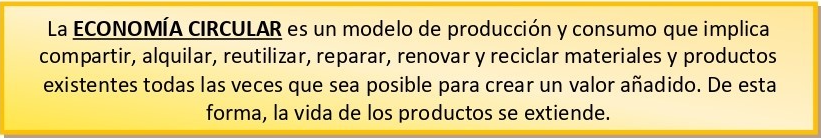

En el epígrafe anterior hablamos de la economía lineal y de la necesidad de generar menos residuos, así como de aprovechar mejor los recursos disponibles. De esta forma, surge la economía circular, que tradicionalmente se enfocaba en las 3 R's:
- Reducir.
- Reciclar.
- Reutilizar.
Hoy en día, el concepto se ha ampliado y han pasado a ser 7 R's:
- Rediseñar la manera de producir y consumir los productos de forma más sostenible y eficiente. Por ejemplo, diseñar los móviles para que cambiar la batería se más fácil e incite a que muchas personas no compren un teléfono nuevo, sino que la sustituyan por otra.
- Reducir la cantidad de bienes y servicios consumidos, así como los residuos que generamos. También se debe reducir la cantidad de materiales y energía usada para la producción y el consumo.
- Reutilizar los productos, alargando su vida útil o dándoles un nuevo uso a través del bricolaje o las manualidades. En internet se pueden encontrar bastantes ideas,
- Reparar un producto en vez de comprar uno nuevo cuando se estropea. Es más barato, generalmente, y mejor para el medioambiente.
- Renovar o refabricar es actualizar productos que se encuentran anticuados para que vuelvan a servir a su fin. También se pueden crear productos nuevos con los materiales y componentes recuperados de los antiguos, Por ejemplo, los ordenadores reacondicionados de Back Market son más baratos.
- Recuperar consiste en recoger materiales usados e introducirlos de nuevo en el proceso productivo de otros productos.
- Reciclar es introducir residuos de nuevo en el proceso productivo de otros productos como materia prima.

La importancia de la economía circular radica en los beneficios que reporta:
- Reduce el uso de recursos utilizados alargando la vida de los bienes y servicios.
- Reduce la contaminación, disminuyendo la producción de nuevos productos,
- Reduce los residuos, reutilizándolos o reciclándolos.
- Aumenta el ahorro al disminuir el consumo de nuevos productos, generalmente más caros.
- Beneficia la economía local debido a que la mayor parte de actividades de reparación, refabricación o reciclaje son llevadas a cabo por empresas locales. Esto puede contribuir al aumento del empleo y la mejora de la calidad de vida de las personas de esa localidad,
Aquí os dejo el primer vídeo que tenéis que ver en casa y trabajaremos en clase: